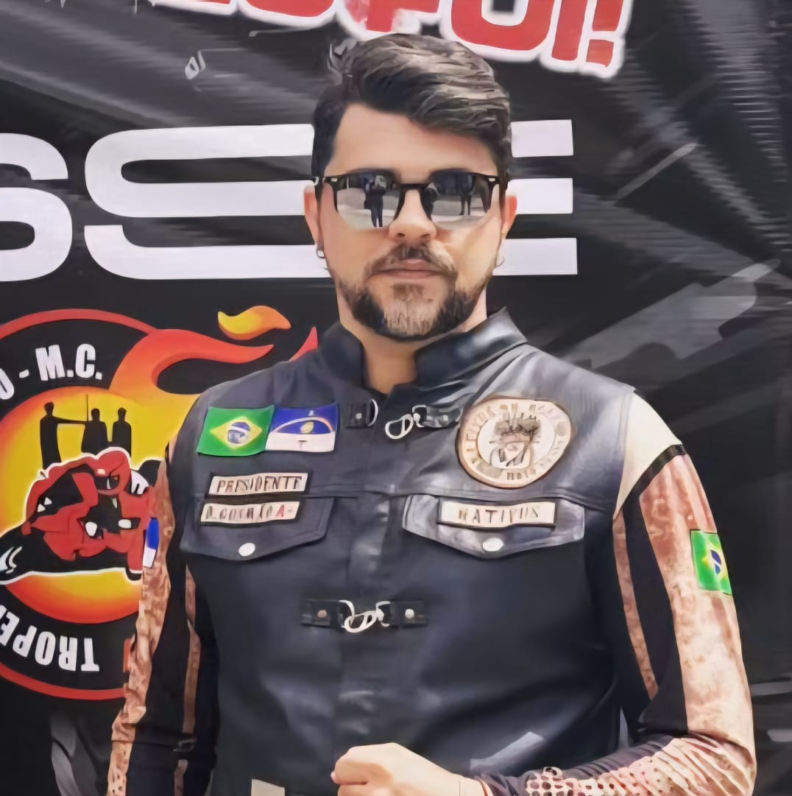

Regional Pernambuco (Capítulo fundador)
Com sede no berço histórico de Olinda/PE, Pernambuco é o Chapter Fundador do Nativus On Road. Nossa regional é o coração administrativo nacional, responsável por preservar os pilares de Irmandade, Respeito, Estrada e Disciplina. Atuamos como o marco zero da nossa história, coordenando a integração nacional e zelando pela lealdade e apoio mútuo.
Prezamos pelo bom relacionamento e interação com todos os grupos e clubes. Acreditamos que a integração é maior que a segregação.

D. Gusmão

John Félix
Estrutura Administrativa Atual (2026)
Cargos existem para servir ao grupo. O respeito é à função e à hierarquia.